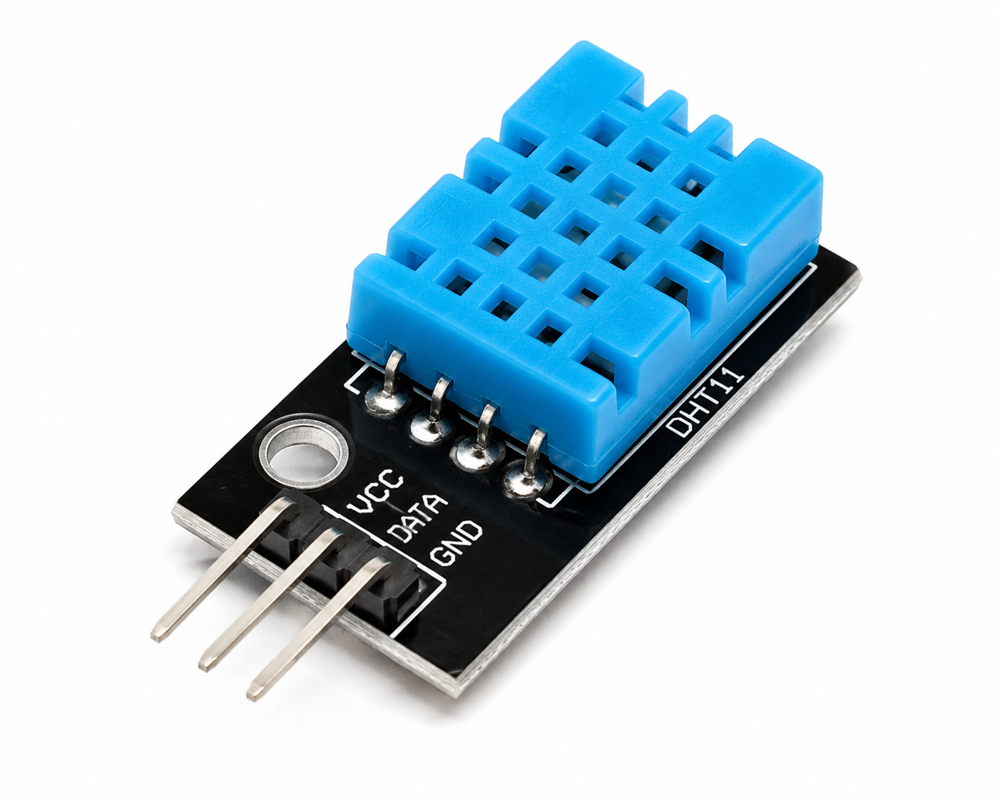
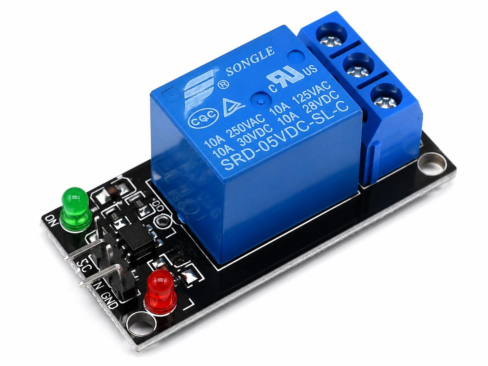

About the Project
This project implements an IoT-enabled Smart Irrigation System designed to monitor soil and environmental conditions and control a DC water pump.
The Arduino UNO R4 WiFi acts as the main controller. A soil moisture sensor measures the moisture level of the soil, a rain sensor provides rain-level data, and the DHT11 monitors temperature and humidity.
In Automatic Mode, the system checks the soil moisture level and activates the water pump when the configured threshold is reached. In Manual Mode, the pump can be controlled remotely using Blynk IoT.
The project combines embedded control, sensor interfacing, relay switching, Wi-Fi communication and cloud-based IoT monitoring.
Key Features
Automatically activates the water pump when soil moisture drops below the configured threshold.
Allows remote pump ON/OFF control through Blynk IoT.
Continuously measures soil moisture percentage.
Reads rain sensor data and publishes it to the dashboard.
Measures temperature and humidity using DHT11.
Sensor readings and pump controls are available remotely through Blynk.
Hardware Components
 Arduino UNO R4 WiFi
Arduino UNO R4 WiFi
Main embedded controller.
 Soil Moisture Sensor
Soil Moisture Sensor
Measures soil moisture.
 Rain Sensor
Rain Sensor
Measures rain level.

DHT11Temperature and humidity sensor.

1-Channel RelayElectrically switches the pump.
 DC Water Pump
DC Water Pump
Provides irrigation water.
 Jumper Wires
Jumper Wires
Used for circuit connections.
 Breadboard
Breadboard
Used for prototyping.
 5V Power Supply
5V Power Supply
Powers the controller.
Hardware Connections
| Component | Pin | Arduino / System Connection |
|---|---|---|
| Soil Moisture Sensor | VCC | 5V |
| Soil Moisture Sensor | GND | GND |
| Soil Moisture Sensor | AO | A0 |
| Rain Sensor | VCC | 5V |
| Rain Sensor | GND | GND |
| Rain Sensor | AO | A1 |
| DHT11 | VCC | 5V |
| DHT11 | GND | GND |
| DHT11 | DATA | D2 |
| Relay Module | VCC | 5V |
| Relay Module | GND | GND |
| Relay Module | IN | D7 |
| Water Pump | Positive | Relay NO |
| Water Pump | Negative | External Supply Negative |
| Relay | COM | Pump Positive Supply Line |
Circuit Diagram

System Wiring
Arduino UNO R4 WiFi connected to the soil moisture sensor, rain sensor, DHT11, relay module and DC water pump.
System Operation
The Arduino reads the soil moisture value.
When the soil moisture level drops below 20%, the relay is activated and the pump turns ON.
When the moisture level reaches 20% or higher, the pump turns OFF.
The pump can be controlled remotely using the Blynk dashboard.
V4 is used for Pump Control.
V5 is used to switch between Automatic and Manual modes.
Software & Libraries
Firmware development and upload environment.
Remote monitoring and control dashboard.
Wi-Fi connectivity for the UNO R4 WiFi.
Provides Blynk cloud integration.
Interfaces with the DHT11 sensor.
Required dependency for sensor operation.
Blynk IoT Configuration
1. Create Template
| Setting | Value |
|---|---|
| Template Name | Smart Irrigation |
| Hardware | Arduino UNO R4 WiFi |
| Connection Type | WiFi |
2. Create Datastreams
| Virtual Pin | Parameter | Type | Range | Unit |
|---|---|---|---|---|
| V0 | Soil Moisture | Integer | 0–100 | % |
| V1 | Temperature | Double | 0–100 | °C |
| V2 | Humidity | Double | 0–100 | % |
| V3 | Rain Level | Integer | 0–100 | % |
| V4 | Pump Switch | Integer | 0–1 | — |
| V5 | Mode Switch | Integer | 0–1 | — |
3. Dashboard Configuration
| Dashboard Element | Virtual Pin |
|---|---|
| Soil Moisture Gauge | V0 |
| Temperature Gauge | V1 |
| Humidity Gauge | V2 |
| Rain Level Gauge | V3 |
| Pump Control Switch | V4 |
| Auto / Manual Mode | V5 |
4. Configure Credentials
#define BLYNK_TEMPLATE_ID "YOUR_TEMPLATE_ID"
#define BLYNK_TEMPLATE_NAME "Smart Irrigation"
#define BLYNK_AUTH_TOKEN "YOUR_BLYNK_AUTH_TOKEN"
char ssid[] = "YOUR_WIFI_NAME";
char pass[] = "YOUR_WIFI_PASSWORD";Arduino Firmware
#define BLYNK_TEMPLATE_ID "YOUR_TEMPLATE_ID"
#define BLYNK_TEMPLATE_NAME "Smart Irrigation"
#define BLYNK_AUTH_TOKEN "YOUR_BLYNK_AUTH_TOKEN"
#include <WiFiS3.h>
#include <BlynkSimpleWifi.h>
#include <DHT.h>
char ssid[] = "YOUR_WIFI_NAME";
char pass[] = "YOUR_WIFI_PASSWORD";
#define SOIL_PIN A0
#define RAIN_PIN A1
#define RELAY_PIN 7
#define DHTPIN 2
#define DHTTYPE DHT11
DHT dht(DHTPIN, DHTTYPE);
BlynkTimer timer;
#define VPIN_SOIL V0
#define VPIN_TEMP V1
#define VPIN_HUM V2
#define VPIN_RAIN V3
#define VPIN_PUMP V4
#define VPIN_MODE V5
bool autoMode = true;
bool manualPump = false;
void sendSensorData();
BLYNK_WRITE(VPIN_MODE)
{
autoMode = param.asInt();
}
BLYNK_WRITE(VPIN_PUMP)
{
manualPump = param.asInt();
}
void sendSensorData()
{
int soilRaw =
analogRead(SOIL_PIN);
int rainRaw =
analogRead(RAIN_PIN);
float temperature =
dht.readTemperature();
float humidity =
dht.readHumidity();
int soilPercent =
map(
soilRaw,
1023,
0,
0,
100
);
int rainPercent =
map(
rainRaw,
1023,
0,
0,
100
);
Serial.print("Soil: ");
Serial.print(soilPercent);
Serial.print("% Rain: ");
Serial.print(rainPercent);
Serial.print("% Temp: ");
Serial.print(temperature);
Serial.print(" Hum: ");
Serial.println(humidity);
Blynk.virtualWrite(
VPIN_SOIL,
soilPercent
);
Blynk.virtualWrite(
VPIN_RAIN,
rainPercent
);
Blynk.virtualWrite(
VPIN_TEMP,
temperature
);
Blynk.virtualWrite(
VPIN_HUM,
humidity
);
if (autoMode)
{
if (soilPercent < 20)
{
digitalWrite(
RELAY_PIN,
LOW
);
Blynk.virtualWrite(
VPIN_PUMP,
1
);
}
else
{
digitalWrite(
RELAY_PIN,
HIGH
);
Blynk.virtualWrite(
VPIN_PUMP,
0
);
}
}
else
{
digitalWrite(
RELAY_PIN,
manualPump
? LOW
: HIGH
);
}
}
void setup()
{
Serial.begin(9600);
pinMode(
RELAY_PIN,
OUTPUT
);
digitalWrite(
RELAY_PIN,
HIGH
);
dht.begin();
Blynk.begin(
BLYNK_AUTH_TOKEN,
ssid,
pass
);
timer.setInterval(
2000L,
sendSensorData
);
}
void loop()
{
Blynk.run();
timer.run();
}Project Outcome
Completed IoT Smart Irrigation Prototype
The project demonstrates practical implementation of sensor interfacing, embedded programming, relay-based load control, Wi-Fi communication, IoT dashboard integration and automatic control logic.
The system can be extended with additional soil sensors, multiple irrigation zones, water-level monitoring, scheduling, data logging, weather-based irrigation and industrial-grade field sensors.
Suggested Repository Structure
Smart-Irrigation-System/
│
├── index.html
├── README.md
├── LICENSE
│
├── firmware/
│ └── smart_irrigation.ino
│
├── images/
│ ├── smart-irrigation-circuit.png
│ ├── arduino-r4.png
│ ├── soil-moisture.png
│ ├── rain-sensor.png
│ ├── dht11.png
│ ├── relay.png
│ ├── water-pump.png
│ ├── breadboard.png
│ └── jumper-wires.png
│
└── docs/
└── project-documentation.pdf